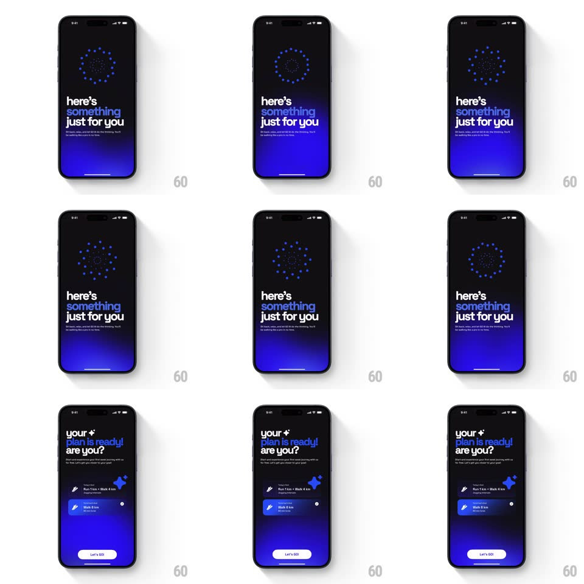

Media
Frame-by-frame

Rebuild this animation 1:1: Go Club's AI plan creation - after the Apple Health link screen, a concentric dot-matrix ring pulses and rotates while "here's something just for you" holds, then plan cards stagger in under "your plan is ready! are you?" with a "Let's GO!" button.

Rebuild this animation 1:1: Go Club's AI plan creation - after the Apple Health link screen, a concentric dot-matrix ring pulses and rotates while "here's something just for you" holds, then plan cards stagger in under "your plan is ready! are you?" with a "Let's GO!" button.
## Integration
Integration: stack-agnostic spec - springs given as stiffness/damping, timed motions as duration + curve; map every value to your framework and animation library of choice.
## Scene
Dark navy-blue gradient screens: first "link to Apple Health" with app icons, an arrow, and a Continue pill. Loading: "here's something just for you" (blue-white gradient type) under a circular field of dots arranged in concentric rings. Result: "your plan is ready! are you?" with two plan cards (Run 1 km + Walk 4 km; Walk 6 km - each with icon and tag) and a white "Let's GO!" pill.
## Motion spec
Pattern: generative loading into reveal, ~3s.
- Loading: the dot rings rotate slowly (outer ring 20s/rev, inner counter-rotating 14s/rev) while pulsing - dots brighten in waves traveling outward (opacity 0.3 -> 1, 1.2s ripple).
- Type: "here's something just for you" holds with a subtle shimmer on the gradient words (background-position sweep, 2s loop).
- Reveal: the dot field contracts and fades (400ms) as the headline swaps to "your plan is ready! are you?" (crossfade, 250ms).
- Cards: plan cards slide up staggered (120ms apart, 300ms, ease-out) with a small icon pop each; "Let's GO!" fades in last (250ms).
## Calibration
- The dot field is the only motion during loading - no spinner or progress bar.
- Cards land top-first in plan order; the button waits for both.
## Reduced motion
Dot field static; loading crossfades to the result (300ms).
## Don't miss
- The dots are individual points in rings - a matrix, not a solid progress ring.
- The gradient headline words ("something", "plan is ready!") carry the blue-to-white shimmer.